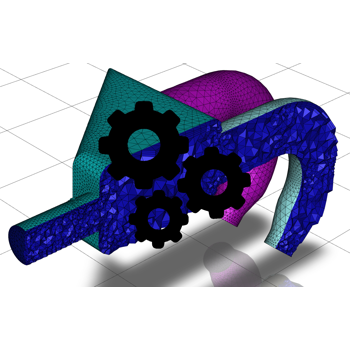

Simulation Examples#
These examples show you how you can use Fluent capabilities from Python to perform Fluent simulations. This includes geometry import, Fluent’s meshing workflows, setting up and running the solver, and reviewing the results using Fluent’s postprocessing capabilities.

Design of Experiments and Machine Learning model building
Design of Experiments and Machine Learning model building



Fault-tolerant meshing workflow using settings objects
Fault-tolerant meshing workflow using settings objects


Modeling Radiation in a Headlamp Using the Monte Carlo Method
Modeling Radiation in a Headlamp Using the Monte Carlo Method